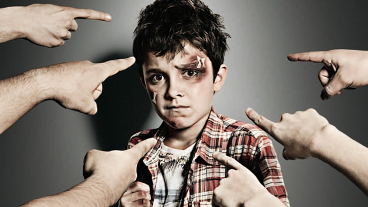

Por desgracia, quien se lleva la peor parte en las situaciones de acoso escolar son, lógicamente, la persona más débil o en condición de inferioridad: nos referimos a las víctimas.
Estas son los principales efectos negativos del bullying en los niños y niñas que lo sufren:
Baja autoestima. Actitudes pasivas. Trastornos emocionales. Problemas psicosomáticos. Depresión, ansiedad y pensamientos suicidas. Pérdida de interés por los estudios, lo que puede desencadenar en un menor rendimiento y fracaso escolar. Aparición de trastornos fóbicos. Sentimientos de culpabilidad. Alteraciones de la conducta: intromisión, introversión, timidez. aislamiento social y soledad. Problemas en las relaciones sociales y familiares. Baja satisfacción familiar. Baja responsabilidad, actividad y eficacia. Síndrome de estrés postraumático. Rechazo a la escuela. Manifestaciones neuróticas y de ira. Faltas de asistencia a la escuela e incluso abandono de los estudios.
